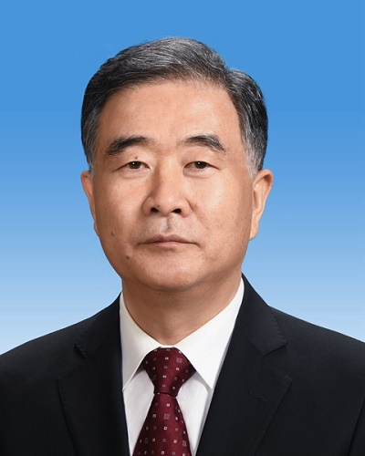
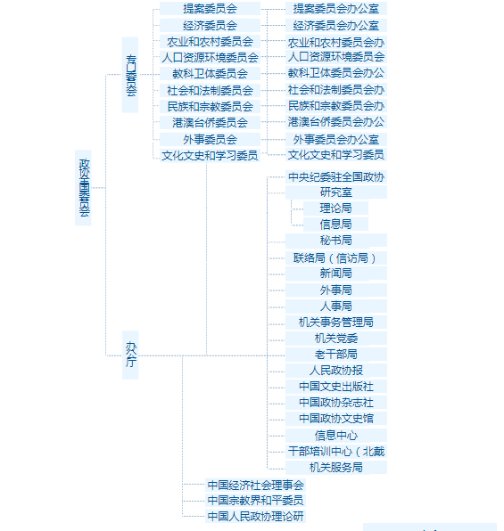

中国人民政治协商会议是中国人民爱国统一战线的组织，是中国共产党领导的多党合作和政治协商的重要机构，是中国政治生活中发扬社会主义民主的一种重要形式。由中国共产党和各民主党派、无党派民主人士、各人民团体、各界爱国人士共同组成。
中国人民政治协商会议设全国委员会和地方委员会。
政协全国委员会每届任期五年，设主席、副主席若干人、秘书长。
全国委员会设常务委员会主持会务。常务委员会由全国委员会主席、副主席、秘书长、常务委员组成。全国委员会主席主持常务委员会的工作，副主席、秘书长协助主席工作。主席、副主席、秘书长组成主席会议，处理常务委员会的重要日常工作。
2018年3月“两会”期间，汪洋同志当选为十三届全国政协主席。

2018年3月，根据第十三届全国人民代表大会第一次会议批准的党和国家机构改革方案，组建全国政协农业和农村委员会。将全国政协经济委员会联系农业界和研究“三农”问题等职责调整到全国政协农业和农村委员会。
全国政协文史和学习委员会更名为全国政协文化文史和学习委员会。将全国政协教科文卫体委员会承担的联系文化艺术界等相关工作调整到全国政协文化文史和学习委员会。
全国政协教科文卫体委员会更名为全国政协教科卫体委员会。
中国人民政治协商会议全国委员会的机构组成如下图所示。
